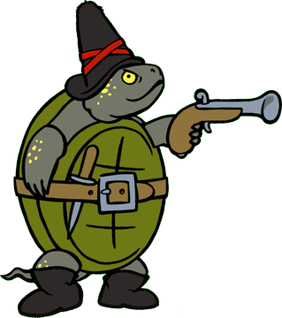

Ein Grenzpfahl hält Rückschau 
Auf dem Riedlehrpfad gibt es viel zu entdecken. Es gibt 7 Stationen, die es zu finden gilt. Wenn du in die Nähe einer Station kommst, kannst du sie anklicken und mehr über den Ort erfahren, an dem du dich gerade befindest.
